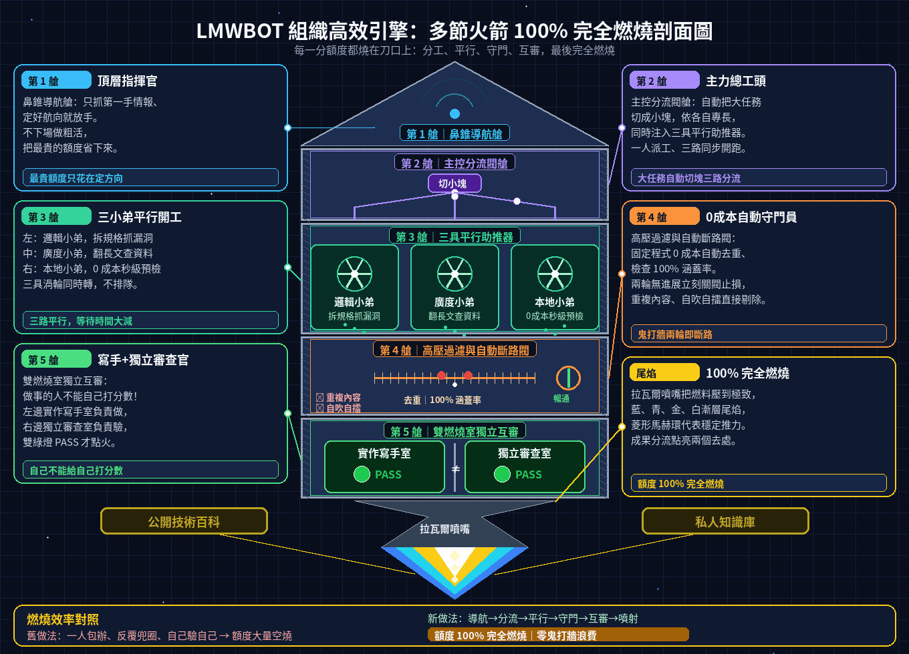

組織高效引擎：多節火箭 100% 完全燃燒剖面圖
頂層抓情報 ➔ 總工頭自動拆單 ➔ 三位專長小弟平行推進 ➔ 0 成本去重止損閥 ➔ 雙燃燒室獨立互審
支援 一般人日常版、工程師版、影音創作者版 三大場景

1. 五大 AI 模型實機評測與職位搭配
Claude、Codex、Gemini、Grok 與本地模型的真實回應速度、踩坑提醒與 7 大工作職位黃金組合（新增影音與短影音創作者）。
2. AI 不鬼打牆工作手冊
「做事的人不能自己打分數」：切小塊、總工頭帶小弟、去重、固定程式驗收與雙人互審 6 步驟。
3. LMWBOT 系統白話指南
一般版、智慧版（總工頭自動帶小弟）與工程圖版的功能介紹與常見問答。
五大 AI 模型陣營 CLI 實測速查表（直接攤開）
| 模型陣營 | 實測回應時間 | 最強的地方 | 最適合做什麼 | 踩坑提醒 |
|---|---|---|---|---|
| Anthropic Claude | 單輪 8~23 秒 多輪 45~120 秒 | 工具鏈最完整、可直接改檔與跑測試 | 架構重構、深度推理、雙人獨立互審 | 多輪任務較久，記得設回合上限與逾時 |
| OpenAI GPT Codex | 約 15~68 秒 | 沙箱安全執行、規格拆解與邊界檢查極準 | 拆規格、找邊界漏洞、格式檢查 | 預設沙箱可能唯讀，寫檔前先確認權限 |
| Google Gemini CLI | 約 12~25 秒 | 有免費額度、超長文章閱讀、內建搜尋 | 跨檔案廣度掃描、上網查證、長文比對 | 同時發太多請求易遇到 429，需設自動重試 |
| xAI Grok | 短問答秒級 | 唯一具備 X (Twitter) 即時社群與開源情報 | 當頂層總指揮、抓第一手社群情報 | 額度珍貴，只做決策與情報，粗活交給小弟 |
| 本地開源模型 (Ollama) | 約 1~5 秒 | 0 費用、斷網可用、100% 離線隱私 | 語法預檢、遮蔽個資、日常問題初步分流 | 複雜系統細節較弱，重要結論需程式複核 |
新增第 7 組：影音與短影音創作者（YouTube / Reels / Shorts / 動畫）
| 主力大腦 | 協同幫手 | 最後把關 | 為什麼這樣配 |
|---|---|---|---|
| Claude 分鏡總導演 ＋ Grok / Meta 社群話題雷達 | 本地 Flux / Playwright 首尾幀 ＋ 互動式 AI 局部改圖與繁中無痕改字 ＋ Whisper / Edge-TTS 語音字幕 ＋ Veo / Sora 刀口點火 | FFmpeg 0 成本音畫同步、-14 LUFS 響度與繁體字幕守門員 | 生影片點數比文字貴 10~50 倍：先用免費工具定稿分鏡與首尾幀，首尾幀有瑕疵就用互動式 AI 局部改圖只修圈選處（圈外一個像素都不動）、繁中標題無痕改字零亂碼、橫圖一鍵擴成直圖；守門員過關才點火，連續兩輪不及格就斷路重寫，16:9 與 9:16 一鍵雙出。 |
首尾幀改圖再升級：點哪裡改哪裡（點一下、框一塊、圈一圈自動帶座標標籤進對話框，一句話同時改三處，圈外像素鎖死）、一鍵拆圖層（底圖、主體、文字層分開，標題拖著走還能改字）、本地 0 成本預渲染兩段式（先秒出草稿過品管閘門，滿意才花一次高清點數，重繪幅度鎖 0.35 不抽卡）。